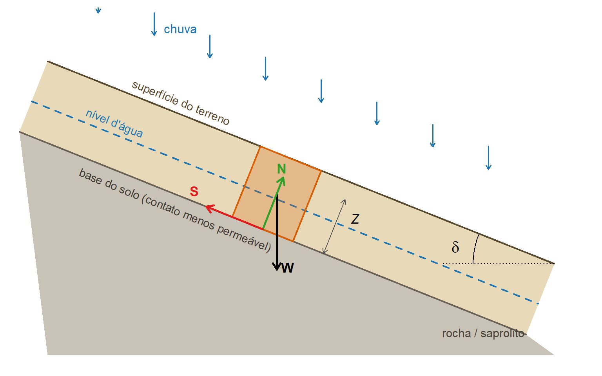
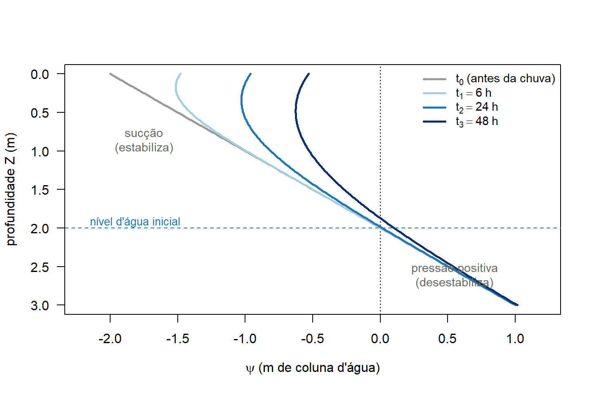
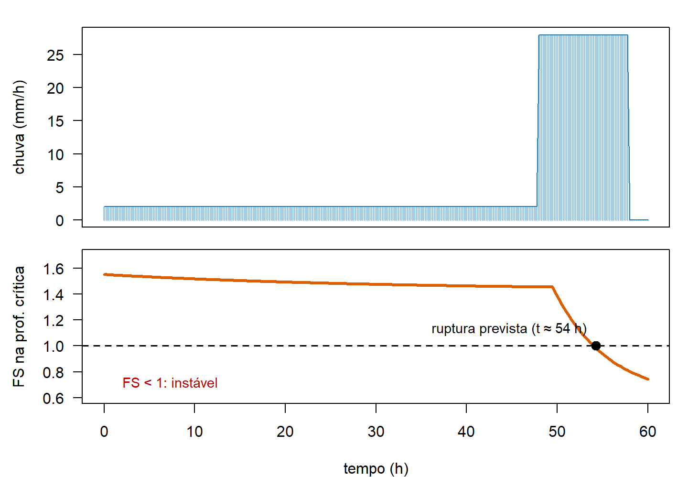

1 Visão teórica: como o TRIGRS “pensa”
Antes de instalar e rodar qualquer coisa, vale entender o que o TRIGRS calcula e por quê. Este capítulo é uma versão didática e simplificada da teoria — quem quiser o rigor completo deve ler o manual do programa (Baum, Savage & Godt, 2008 — USGS OFR 2008-1159) e o artigo de referência Baum, Godt & Savage (2010), listados nas Referências.
1.1 O problema físico em uma frase
Chuva infiltra → a água preenche os poros do solo → a pressão da água nos poros sobe → o atrito entre os grãos diminui → em algum momento a encosta escorrega.
Deslizamentos rasos (tipicamente 1 a 3 m de profundidade) deflagrados por chuva são o mecanismo dominante em desastres como o da Região Serrana do RJ em janeiro/2011. A superfície de ruptura costuma se formar no contato entre o solo (colúvio/residual) e um material menos permeável abaixo — e é exatamente esse cenário que o TRIGRS representa.
O TRIGRS responde, para cada célula de uma grade raster e para cada instante de uma chuva: “esta célula está estável agora?” — combinando dois ingredientes:
- um modelo de infiltração transiente (como a pressão da água evolui no tempo e na profundidade), e
- um modelo de estabilidade de talude infinito (a pressão calculada reduz o fator de segurança?).
Vamos a cada um deles.
1.2 Ingrediente 1 — o talude infinito
A geometria dos deslizamentos rasos (comprimento muito maior que a espessura) permite uma simplificação poderosa: tratar cada célula como um plano inclinado infinito, com ruptura paralela à superfície. A Figura 1.1 mostra o esquema:
O equilíbrio dessa coluna resulta na fórmula do Fator de Segurança que o TRIGRS avalia em cada profundidade \(Z\) e instante \(t\) (Baum et al., 2010, eq. 4):
\[ FS(Z,t) \;=\; \underbrace{\frac{\tan\varphi'}{\tan\delta}}_{\text{atrito}} \;+\; \underbrace{\frac{c'}{\gamma_s\, Z \sin\delta \cos\delta}}_{\text{coesão}} \;-\; \underbrace{\frac{\psi(Z,t)\,\gamma_w \tan\varphi'}{\gamma_s\, Z \sin\delta \cos\delta}}_{\text{efeito da água}} \]
| Termo | Significado | De onde vem |
|---|---|---|
| \(\delta\) | inclinação da encosta | grade de declividade (slope.asc) |
| \(\varphi'\) | ângulo de atrito efetivo do solo | ensaios/literatura (por zona) |
| \(c'\) | coesão efetiva | ensaios/literatura (por zona) |
| \(\gamma_s\), \(\gamma_w\) | peso específico do solo e da água | ensaios/constante |
| \(Z\) | profundidade avaliada | até zmax.asc |
| \(\psi(Z,t)\) | carga de pressão da água | é o que o modelo de infiltração calcula! |
Leia a equação como uma disputa: atrito + coesão (estabilizam) contra o empuxo da água (desestabiliza). Os dois primeiros termos são fixos no tempo; o terceiro cresce durante a chuva porque \(\psi\) cresce. Quando \(FS\) cai abaixo de 1, a célula é prevista como instável. Note também o papel de \(Z\): quanto mais profundo, menor o peso relativo da coesão — por isso existe uma profundidade “crítica” onde o \(FS\) é mínimo (o TRIGRS a reporta na grade TRz_at_fs_min).
1.3 Ingrediente 2 — a infiltração transiente
Falta a peça central: como \(\psi(Z,t)\) evolui durante a chuva? O TRIGRS usa soluções analíticas da equação de fluxo vertical em meio poroso (a equação de Richards linearizada, seguindo Iverson, 2000, estendida por Baum et al., 2008; 2010): a chuva que infiltra gera uma “onda de pressão” que se difunde para baixo, com velocidade controlada pela difusividade hidráulica \(D_0\) do solo.

Pontos que valem guardar (todos detalhados no manual e em Baum et al., 2010):
- Zona não saturada: acima do nível d’água o solo tem sucção (pressão negativa), que ajuda a estabilidade. O TRIGRS pode modelar explicitamente essa zona (modelo de Gardner, parâmetro \(\alpha\)) ou assumir solo saturado desde o início (mais conservador).
- Difusividade \(D_0\) controla o atraso da resposta: solos mais permeáveis respondem em horas; menos permeáveis, em dias. É por isso que o TRIGRS consegue prever o momento da instabilidade, não só o local.
- Fronteira inferior: a base impermeável em
zmaxfaz a pressão “se acumular” — modelo de profundidade finita, uma das extensões do TRIGRS sobre o modelo original de Iverson. - Limite de infiltração: se a chuva excede a capacidade de infiltração (\(K_{sat}\)), o excesso vira escoamento superficial, roteado célula a célula pelo esquema D8 calculado no TopoIndex.
A combinação dos dois ingredientes dá a assinatura típica da resposta de uma célula:

1.4 Premissas e limitações (ler antes de confiar no mapa!)
O manual do TRIGRS é enfático: o programa é uma ferramenta para quem conhece o fenômeno, e interpretar resultados exige julgamento geológico-geotécnico. As principais simplificações:
- fluxo 1-D vertical e solo isotrópico/homogêneo em cada célula (heterogeneidade só entre células/zonas);
- modelo de talude infinito: vale para rupturas rasas e planares — não para deslizamentos profundos ou rotacionais;
- não modela a propagação (runout) da massa mobilizada — o TRIGRS diz onde inicia e quanto material fica instável; o que acontece encosta abaixo é assunto da metodologia de fluxo de detritos (Partes 3 e 4 deste minicurso);
- resultados são tão bons quanto os dados de entrada (MDE, profundidade do solo, parâmetros geotécnicos, chuva) — daí a importância da calibração com inventário de cicatrizes.
1.5 O fluxograma geral da metodologia
O diagrama abaixo organiza todas as etapas do trabalho — da coleta de dados à estimativa de volumes sob mudança climática. Ele expande o roteiro inicial da pesquisa e serve de mapa para o minicurso inteiro:
flowchart TB
subgraph ETAPA1["1 · Coleta e preparação de dados (GIS)"]
direction TB
A1["MDE<br/>(declividade, direção de fluxo)"]
A2["Mapas geológico,<br/>geomorfológico e de solos"]
A3["Uso e cobertura<br/>do solo"]
A4["Chuva<br/>(evento e IDF)"]
A5["Inventário de<br/>cicatrizes (2011)"]
end
subgraph ETAPA2["2 · Análise geoespacial"]
B1["Zonas de propriedades<br/>(zones.asc)"]
B2["Profundidade do solo<br/>(zmax.asc)"]
B3["Grades congruentes<br/>(GridMatch)"]
end
subgraph ETAPA3["3 · Modelagem TRIGRS"]
C1["TopoIndex<br/>(roteamento D8)"]
C2["TRIGRS<br/>FS(Z,t) por célula"]
end
subgraph ETAPA4["4 · Validação e calibração"]
D1["Comparação FS < 1<br/>× cicatrizes"]
D2["Ajuste de parâmetros<br/>(K_sat, NA inicial, c', φ')"]
end
subgraph ETAPA5["5 · Produtos"]
E1["Mapa de suscetibilidade<br/>calibrado"]
E2["Volume mobilizável<br/>Σ área × Z_ruptura"]
E3["Volumes GIDES/JICA<br/>(Vdy1, Vdy2)"]
E4["Cenários de mudança<br/>climática (chuva Pd)"]
end
ETAPA1 --> ETAPA2 --> C1 --> C2 --> D1 --> D2
D2 -- "iterar" --> C2
D2 --> E1
E1 --> E2 --> E3
A4 --> E4 --> C2
E4 --> E3
classDef default fill:#ffffff,stroke:#64748b,color:#111827
style ETAPA1 fill:#f8fafc,stroke:#94a3b8,color:#0f172a
style ETAPA2 fill:#f8fafc,stroke:#94a3b8,color:#0f172a
style ETAPA3 fill:#dbeafe,stroke:#1f78b4,color:#0f172a
style ETAPA4 fill:#f8fafc,stroke:#94a3b8,color:#0f172a
style ETAPA5 fill:#fef3c7,stroke:#d97706,color:#0f172a
E, dentro da etapa de modelagem, o fluxo operacional dos programas que você vai usar nos próximos capítulos:
flowchart LR G["GIS<br/>(QGIS/ArcGIS)<br/>grades .asc"] --> M["GridMatch<br/><i>grades congruentes?</i>"] M --> T["TopoIndex<br/>tpx_in.txt<br/><i>índices + pesos D8</i>"] T --> R["TRIGRS<br/>tr_in.txt<br/><i>infiltração + FS</i>"] R --> S["Resultados<br/>TRfs_min, TRz_at_fs_min,<br/>TRp_at_fs_min, runoff..."] S --> V["Visualização e análise<br/>(R/terra ou QGIS)"] classDef default fill:#ffffff,stroke:#64748b,color:#111827 style R fill:#dbeafe,stroke:#1f78b4,color:#0f172a
1.6 Onde cada coisa está no minicurso
| Etapa do fluxograma | Onde é tratada |
|---|---|
| Instalar e compilar as ferramentas | Instalação e Compilação |
| Entender grades e arquivos de entrada | O exemplo tutorial |
| Rodar TopoIndex + TRIGRS | Primeira rodada |
| Visualizar FS e quantificar volumes | Resultados no R |
| Bacia real, calibração, volumes, clima | Partes 2–4 (em construção) |
Para aprofundar
- Baum, R.L., Godt, J.W. & Savage, W.Z. (2010) — Estimating the timing and location of shallow rainfall-induced landslides using a model for transient, unsaturated infiltration, J. Geophys. Res., 115, F03013 — a formulação completa (infiltração não saturada, zona saturada de profundidade finita e acoplamento com o FS).
- Manual do TRIGRS 2.0/2.1 (Baum, Savage & Godt, 2008 — USGS OFR 2008-1159; e
USER_GUIDE.mdda versão 2.1) — descrição de todos os parâmetros dos arquivos de inicialização e das opções de modelagem. - Iverson, R.M. (2000) — Landslide triggering by rain infiltration — o modelo de difusão que está no coração do TRIGRS.